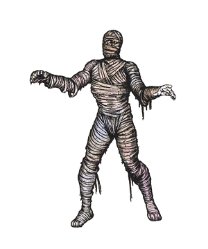

Mummy

CLIMATE/TERRAIN:
| Desert subterranean
|
FREQUENCY:
| Rare
|
ORGANIZATION:
| Pack
|
ACTIVITY CYCLE:
| Night
|
DIET:
| None
|
INTELLIGENCE:
| Low (5-7)
|
TREASURE:
| P, (D)
|
ALIGNMENT:
| Lawful evil
|
NO. APPEARING:
| 2-8 (2d4)
|
ARMOR CLASS:
| 3
|
MOVEMENT:
| 6
|
HIT DICE:
| 6+3
|
THAC0:
| 13
|
NO. OF ATTACKS:
| 1
|
DAMAGE/ATTACK:
| 1-12
|
SPECIAL ATTACKS:
| Fear, disease
|
SPECIAL DEFENSES:
| See below
|
MAGIC RESISTANCE:
| Nil
|
SIZE:
| M (6')
|
MORALE:
| Champion (15)
|
XP VALUE:
| 3,000
|
Mummies are corpses native to dry desert areas, where the dead are entombed by
a process known as mummification. When their tombs are disturbed, the corpses
become animated into a weird unlife state, whose unholy hatred of life causes
them to attack living things without mercy.
Mummies are usually (but not always) clothed in rotting strips of linen. They
stand between 5 and 7 feet tall and are supernaturally strong.
Combat: Mummies are horrific enemies. A single blow from one's arm inflicts 1-12
points of damage, and worse, its scabrous touch infects the victim with a rotting
disease which is fatal in 1-6 months. For each month the rot progresses, the
victim permanently loses 2 points of Charisma. The disease can be cured only with a cure disease spell. Cure wounds spells have no effect on a person inflicted with mummy rot and his wounds
heal at 10% of the normal rate. A regenerate spell will restore damage but will not otherwise affect the course of the
disease.
The mere sight of a mummy causes such terror in any creature that a saving
throw versus spell must be made or the victim becomes paralyzed with fright for 1
to 4 rounds. Numbers will bolster courage; for each six creatures present, the
saving throw is improved by +1. Humans save against mummies at an additional +2.
Mummies can be harmed only by magical weapons, which inflict only half damage
(all fractions round down). Sleep, charm, hold, and cold-based spells have no effect. Poison and paralysis do not harm them.
A resurrection spell will turn the creature into a normal human (a fighter at 7th level
ability) with the memories of its former life; or will have no effect if the mummy
is older than the maximum age the priest can resurrect. A wish will also restore a mummy to human form but a remove curse will not.
Mummies are vulnerable to fire, even nonmagical varieties. A blow with a torch
inflicts 1-3 points of damage. A flask of burning oil inflicts 1-8 points of
damage on the first round it hits and 2-16 on the second round. Magical fires
are +1 damage/die. Vials of holy water inflict 2-8 points of damage per direct
hit.
Any creature killed by a mummy rots immediately and cannot be raised from
death unless both a cure disease and a raise dead spell are cast within six rounds.
Habitat/Society: Mummies are the product of an embalming process used on wealthy and important
personages. Most mummies are corpses without magical properties. On occasion,
perhaps due to powerful evil magic or perhaps because the individual was so
greedy in life that he refuses to give up his treasure, the spirit of the mummified
person will not die, but taps into energy from the Positive Material plane and
is transformed into an undead horror. Most mummies remain dormant until their
treasure is taken, but then they become aroused and kill without mercy.
A mummy lives in its ancient burial chamber, usually in the heart of a crypt
or pyramid. The tomb is a complex series of chambers filled with relics (mostly
nonmagical). These relics include models of the mummy's possessions, favorite
items and treasures, the bodies of dead pets, and foodstuffs to feed the spirit
after death. Particularly evil people will have slaves or family members slain
when they die so the slaves can be buried with them. Because of their magical
properties, mummies exist on both Prime and Positive Material planes.
Ecology: To create a mummy, a corpse should be soaked in a preserving solution
(typically carbonate of soda) for several weeks and covered with spices and resins.
Body organs, such as the heart, brain, and liver, are typically removed and sealed
in jars. Sometimes gems are wrapped in the cloth (if the treasure listing for
the mummy indicates it possesses gems, a few may be placed in the wrappings).
Mummies are not part of the natural ecosystem and have no natural enemies.
Mummy dust is a component for rotting and disease magical items.
(See also Other Magical Diseases, Dungeon Master Guide)
Index